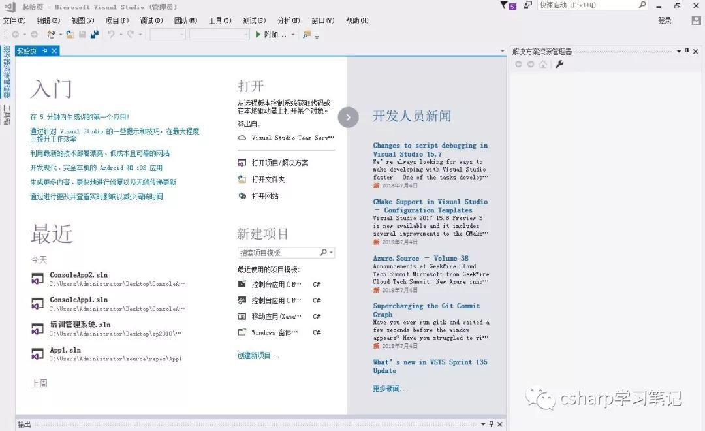
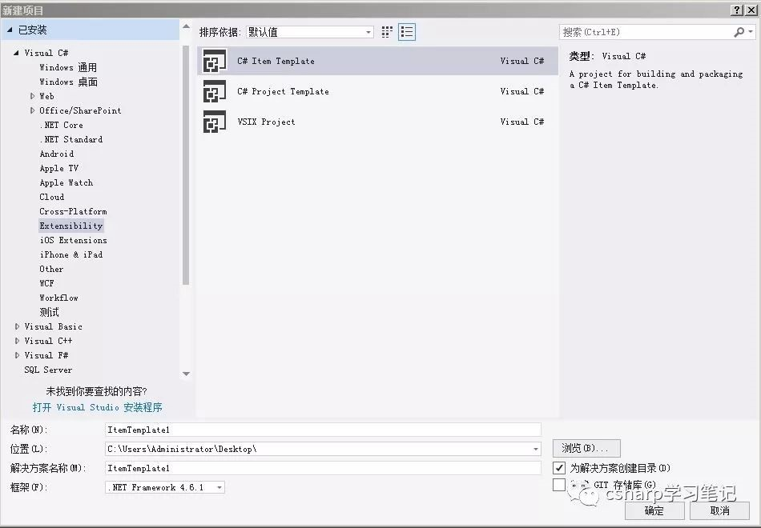
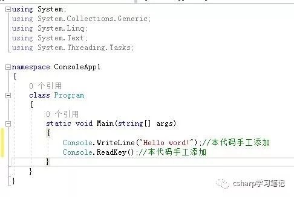
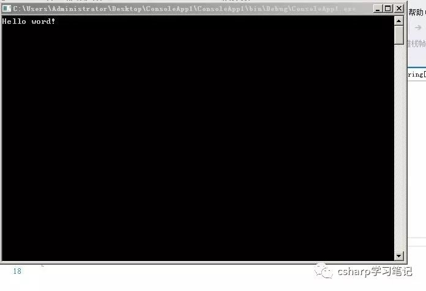

原文出处:本文由博客园博主yangb8提供。
原文连接:https://www.cnblogs.com/cxytt/p/10855322.html
原文连接:https://www.cnblogs.com/cxytt/p/10855322.html
控制台应用程序为了兼容DOS程序而设立的，其执行就好像在一个DOS窗口中执行一样，没有自己的界面。下面就向大家展示一下如何创建控制台应用程序。
第一步、我们打开VS2017，出现如下界面：

第二步、单击“文件（F）--->新建（N）--->项目（P）...”就弹出“新建项目”对话框，其界面如下：

第三步、在此对话框中选择“Visual C#--->Windows 桌面--->控制台应用程序（.NET Framework）”，并且选择好文件保存的路径（即界面的“位置”），最后单击“确定”按钮即可创建控制台应用程序，其界面如下：

第四步、在主窗口中增加两句代码：

第五步、单击工具面板的“启动”图标（或者按F5），系统就自动生成exe文件并开始运行，其界面如下：

到此为止，一个完整的控制台应用程序就完成了，看起来操作非常简单，最后我还要谈下其他问题
1、在创建新项目时除了用菜单外，还可以通过ctrl+Shif+N或者单击工具面板上的“新建项目”图标完成；
2、这个例子是即编译又运行了代码，但有时只编译不运行那我们就直接按F6，有时按Ctrl+F5执行非调试模式运行代码；
3、代码解释，第一句Console.WriteLine("Hello word!")是在控制台上输入字符串命令，第二句Console.ReadKey()是等待用户按键操作。